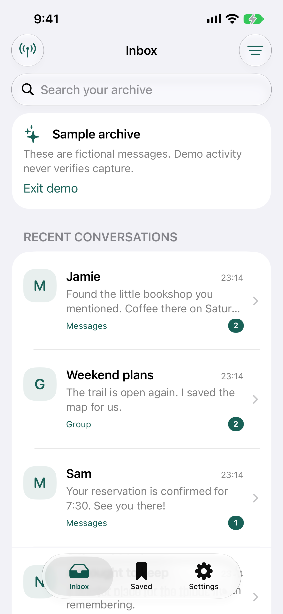

You choose what to save
A Shortcuts automation passes selected notification text to NotGone.
APPTUNESLABS · iOS 27+
A private home for the notifications that matter.
A Shortcuts automation passes selected notification text to NotGone.
iPhone · iOS 27+ · No account. No message-content server. Your archive is excluded from iCloud device backups.

A Shortcuts automation passes selected notification text to NotGone.
Browse, search, and save the copies you actually captured.
Lock, export, or delete your archive. Optional analytics never includes message content or search terms.
SHORTCUTS
One quick setup in Apple Shortcuts, then your archive can begin.
Apple Shortcuts ↗In Shortcuts, create a new shortcut. Add the action “Save Notification to NotGone”.
Open Edit → Automation. Choose Notifications, then select your source app. Enable the automation.
Pass the notification’s title, subtitle, body, date, and source bundle ID to the matching action fields. If a property is unavailable, leave that optional field empty. The source bundle ID is required.
Have a notification arrive from the selected app, then return here. Capture health updates only after the Save Notification action receives content.
Only notifications delivered and passed by your automation can be saved. NotGone cannot retrieve chat history, attachments, or messages it never captured.
NotGone cannot recover notifications that were never captured, or detect when a message is edited or removed in another app.